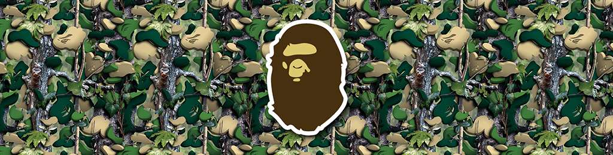
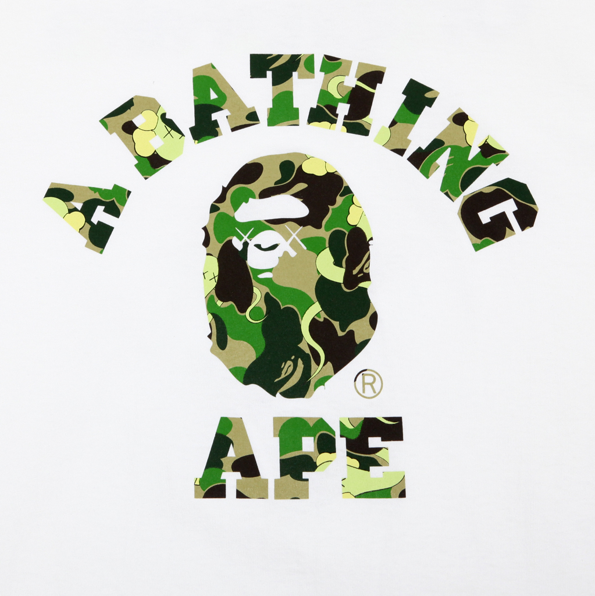

|  |
BAPE是诞生于日本原宿的街头系潮流服饰著名品牌，全称是"A Bathing Ape in Lukewarm Water"，意思是“安逸生活的猿人”。在汉语地区称为“猿人头”，也称为安逸猿。名称来源于1968年出品的美国科幻电影《人猿星球》（Planet of The Apes）。 日本原宿的龙头品牌Bape由毕业于日本文化服装学院的设计师Nigo在1993年11月创立，“安逸猿”的LOGO由中村晋一郎设计。 bape bape Bape（安逸猿）以T恤开始，由于其设计独特并限量供应，慢慢在日本的潮人中有了名气。之后设计师Nigo开始慢慢地设计其他服装，发展至今，已经有女装、童装、鞋子等众多的副牌，任何带有这只“安逸猿”图案的产品都会成为众人竞相追捧的对象。 2001年开始出现的Bape（安逸猿）女装品牌BAPYBusyWorkingLady，面向年轻的OfficeLady群体，和当初的灵感来源已经没什么关系，其设计师是KIKO，服饰玩的都是可爱元素，比如冰激凌、豹纹等，除Bape外，多在女装和童装产品上出现的叫作BABYMILO的小猴子是Bape（安逸猿）的玩具系列的代表作。 日本原宿的龙头品牌Bape全名是"A Bathing Ape in Lukewarm Water”，意思是安逸生活的猿人，由毕业于日本文化服装学院的设计师Nigo在1993年11月创立，“安逸猿”的LOGO由中村晋一郎设计。 名称 A Bathing Ape 的 Logo有时会以其他名字出现,分别是"Bape", "A.S.N.K.A", "Ape General","Busy Work Shop", "FootSoldier" "Bapexclusive"。创始人长尾智明，1993年11月创立了"A Bating Ape in Lukewarm Water"，和其他里原宿系设计师一样，他也毕业于东京文化服装学院，但BAPE的LOGO却不是出自他手，而是他的好友里原宿文化重要代表人物、著名插画师中村晋一郎花一周时间所设计。BAPE下面有很多子牌：BAPEST，Aape，Bapy 和Baby Milo。 BAPE以T恤为开端，每款只生产五十件，其中三十件分发给员工和朋友，只有少量流到市面上。有人问那他怎么赚钱呢？BAPE不是以赚钱为目的成立的，说白了就是自己玩自己爽，因为长尾当时有许多别的工作，收入不成问题，所以他坚持产品品质，要做能让周围人也都满意的东西。在最初两年中，Bape只设计T恤，由于设计独特、保证质量，产品限量可以彰显穿着者个性，在日本潮人中有了点小名气。之后，BAPE开始涉足设计其他服饰。 |